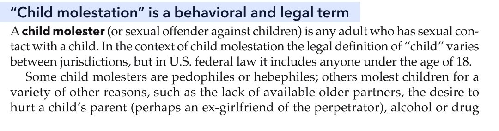
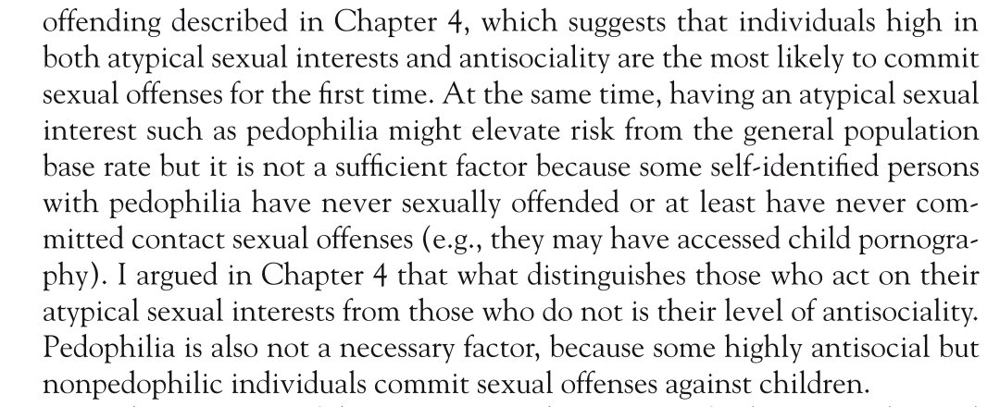

@liueric40542933 你根本没看明白我在说什么，我在说“公共伦理风险”，你在说什么？我根本没在讨论“谁更容易侵害未成年人”🫠



@shio_vinyl 真要说风险的话醉酒者、OD者、与伴侣不和者也有风险（图1: Simon, Baldwin & Baldwin, 2020）要社会对儿童零风险的事实上应禁止车辆行驶，它们也有令儿童受伤死亡的风险
之后，恋童不是导致CSA的充足条件，但更有可能去看CSEM (图2：Seto, 2018)
而部分人会跑去找替代品：https://t.co/cXwn8iDQGH https://t.co/8jPyPq3pFL
之后，恋童不是导致CSA的充足条件，但更有可能去看CSEM (图2：Seto, 2018)
而部分人会跑去找替代品：https://t.co/cXwn8iDQGH https://t.co/8jPyPq3pFL